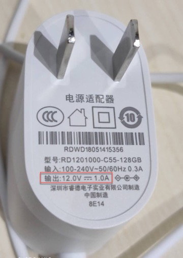

电源管理知识
硬件电路中，往往涉及到不同芯片的电源和供电，即电源管理方面的知识，下面进行详细介绍。
电压转换
此处电源管理中涉及到电压转换，下面详细介绍。
什么是降压变换器
降压变换器=降压转换器- 英文：Buck Converter
- 又称：
DC-to-DC power converter=直流-直流转换器step-down converterBuck Chopper=降压斩波器
- 作用：
- 降低电压的直流-直流转换器
- 输出（负载）端的电压会比输入（电源）端要低
- 但其输出电流会大于输入电流
- 降低电压的直流-直流转换器
- 所属种类：开关电源=switched-mode power supply=SMPS
为何要降低电压？
- 为了实现在外接电压输入比较大时，内部原器件也可以正常工作
- 背景：
- 电路板的输入电压比较高，比如12V，
- 电路板上的内部的原器件（比如USB，DRAM，CPU等）需要的工作电压是更低的，比如5V，3.3V，1.8V等等，
- 所以：
- 需要转换电压，内部原器件才能正常工作
- 且同时要尽量保持高的电压转换效率
- 否则不仅是能量转换效率低
- 而且损失的能量转换的热量导致电路板散热问题
- 背景：
降压举例
在智能音箱拆解总结 天猫精灵方糖BOM，期间所整理的信息：
- 外部输入电压较高：12V
- =电源插头的输出电压：12V
- 
- =电源插头的输出电压：12V
- 电路板上各种芯片的工作电压比较低
- =关于芯片的工作电压Vcc比较低
- 主控SoC芯片 MTK MT8516：
1.15V - Nand Flash存储芯片 Samsung K9F1G08U0F：
3.3V(2.7V ~ 3.6V) - ADC芯片 TI ADC128D818：
3V ~ 5.5V - 音频功放芯片 TI LMV1012：
2V ~ 5V - 音频功放芯片 NXP TFA9895：
2.5V ~ 5.5V
- 主控SoC芯片 MTK MT8516：
- =关于芯片的工作电压Vcc比较低
- -》所以需要电源管理芯片去降低电压
- 输出合适的电流和电压
- 以便于电路板上芯片可以正常工作
- 输出合适的电流和电压
降压变换器 vs 线性稳压器
电压转换芯片常见有2类：
- LDO=
线性稳压器 - DC-DC Converter=
降压变换器=直流-直流降压变换器
现在整理如下：
- 降压变换器：即能实现电压转换，同时又能保证高的转换效率
- 一般大于90%
- 与之对应的是：LDO=线性电压调节器
- 线性电压调节器 - 维基百科，自由的百科全书
- 线性电压调节器（英语：Linear regulator）
- 又称：
- 线性稳压器
- 线性调节器
- 是一种元件
- 作用：保持电压稳定
- 原理：
- 稳压器的电阻会因应负载及输入电压的变化，以达至输出电压稳定不变。其动作尤如一不停自动调节阻值的可变电阻，使之与负载得出的分压保持固定，而过程中因输出与输入电压差而多出的能量则以发热的形式消散掉
- 所以一般转换效率很低
- 比如：假若输出要求为2V，而压降电压同是2V，效率就是2V/(2V+2V)=50%左右
- 这样低的效率，在实际应用上多不为接受
- -》需要低压差稳压器（LDO）
- 又称：